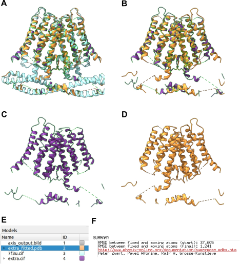

7. Comparison of ModelAngelo generated models with the published traced atomic structure
In this section we are going to overlap the TACAN ModelAngelo derived structure with the structure already published and traced (PDB 7F3U) to interpret the same map (EMD-31441). Two different protocols can be used to overlap and visualize structures, chimerax-operate (Appendix CHIMERA Operate), and phenix-superpose pdbs (Appendix PHENIX Superpose PDBs). Using these protocols we will cover steps 6, 7 and 8 of the general workflow (Fig. 5.6), although the previous and common step 5 is required to import the atomic structure 7F3U.
To import in Scipion the atomic structure, open the protocol import atomic structure (Appendix Import atomic structure) and complete the form including the PDB ID as indicated in Fig. 7.19 (1).
{kind=link}
7.1. Overlapping models in ChimeraX
Open the protocol chimerax-operate (Appendix CHIMERA Operate) and fill in the form as indicated in Fig. 7.20. Complete the form with the atomic structure recently downloaded in Scipion (1) and a structure generated with ModelAngelo (2). In this case we have selected the pruned one obtained in step 3 of the general workflow (Fig. 5.6). Then execute the protocol.
{kind=link}
ChimeraX [Goddard et al., 2018] GUI will open to show both atomic structures overlapped as shown in Fig. 7.21, C.
{kind=link}
ChimeraX models #2 and #3 are the publised structure 7F3U and the pruned model generated by ModelAngelo, respectively. First, we can color model #3 according to the values of the B-factor column using AlphaFold criteria writing in ChimeraX command line:
color bfactor #3 palette alphafold
Although both structures are quite close, a perfect matching can be obtained writing in ChimeraX command line:
mmaker #3 to #2
mmaker superimposes proteins or nuceic acids by fitting aligned residue pairs using one atom per residue. Then, model #3, sligthly moved to fit to model #2, can be saved in Scipion with the ChimeraX command line:
scipionwrite #3 prefix modelangelo_structure_
With this superposition of structures we can inspect similarities and differences between the previously traced structure and the one predicted by ModelAngelo, in a similar way as we have done in Fig. 6.23.
7.2. Overlapping models in Phenix
phenix-superpose pdbs protocol (Appendix PHENIX Superpose PDBs) also allows superposing atomic structures using the Phenix function superpose_pdbs.
Open the protocol phenix-superpose pdbs and fill in the form as indicated in Fig. 7.22. Complete the form with the atomic structure recently downloaded in Scipion (1) and a structure generated with ModelAngelo (2). In this case we have selected the pruned one obtained in step 3 of the general workflow (Fig. 5.6). Remark that in this case the first structure will remain fixed and only the second one will move to fit to the first one. Then execute the protocol.
{kind=link}
After executing the protocol, output result can be visualized clicking Analyze Results. ChimeraX viewer will open and three overlapping models can be observed (Fig. 7.23, A, E): The published atomic structure 7F3U, in blue, the pruned ModelAngelo generated structure, in purple, and the protocol output superposed structure, in orange.
Fig. 7.23 Output result from Scipion protocol phenix-superpose pdbs. A: Overlapped models 7F3U, pruned ModelAngelo prediction and superposed struture. B: Overlapped models pruned ModelAngelo prediction and superposed struture. C: Pruned ModelAngelo prediction. D: Ouput protocol superpose model. E: ChimeraX Models panels. F: Protocol summary detailing RMSD between fixed and moving atoms.
{kind=link}
Comparing the input pruned ModelAngelo prediction model and the output superposed one (Fig. 7.23, C, D) we can observe that the superposed structure has been rotated 180 degrees regarding a vertical axis to get a fitting involving a higher number of residues. The correlation improvement is detailed also in the protocol Summary (Fig. 7.23, F).